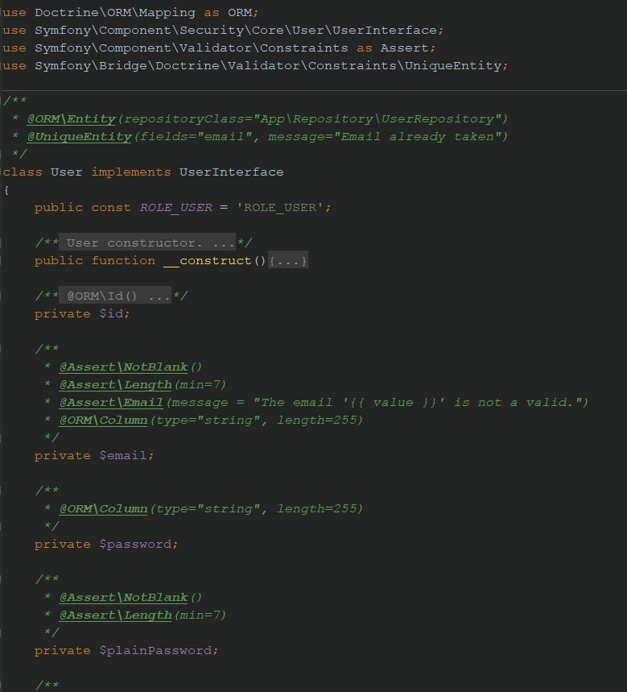
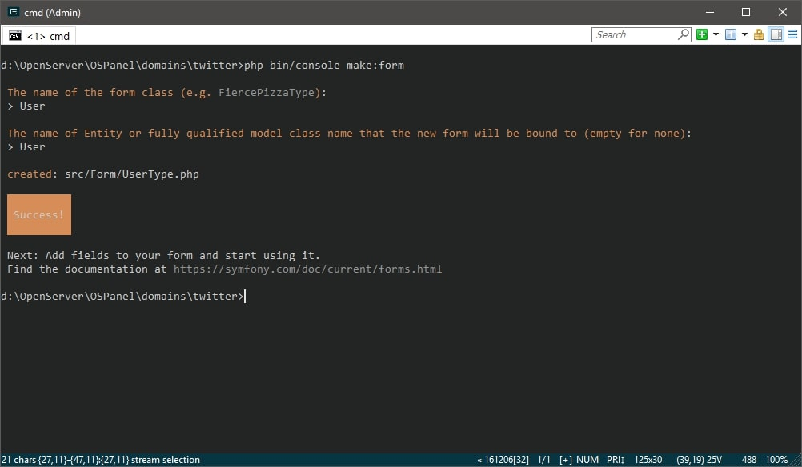
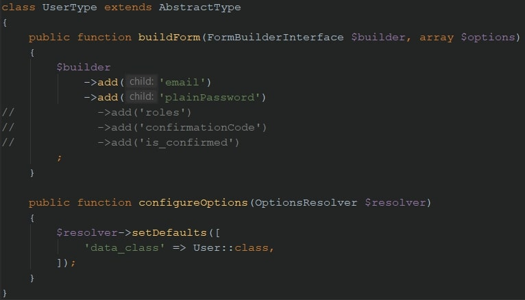
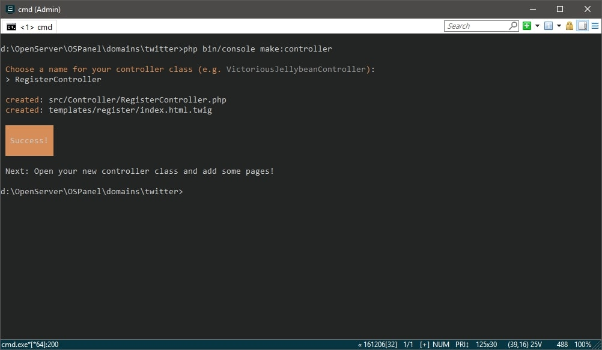

Symfony, user registration
Регистрация, часть 2. Валидация
Каким бы удобным и интуитивно понятным ни был бы интерфейс, пользователь все равно введет
в поле email свои паспортные данные, а в пароль с подписью «не менее 7 символов» вставит слово «семь».
Как им можно верить? - никак, поэтому валидация наше все.
Подключается рецептом composer require validator.
Существует несколько вариантов валидации (подробнее здесь), каждый из которых применим под конкретный сценарий. Мы рассмотрим вариант с валидацией свойств класса, как самый простой и удобный в нашем случае.
/**
* @Assert\NotBlank()
* @Assert\Length(min=3)
* @Assert\Email(message = "The email '{{ value }}' is not a valid.")
* @ORM\Column(type="string", length=255)
*/
private $email;
В примере выше свойству $email заданы следующие правила валидации:
-
-
NotBlank()- свойство не может быть пустым; -
-
Length(min=3)- минимальная длина 3 символа; -
-
Email- поле должно представлять из себя email адрес. В скобках задан аттрибутmessage, значением которого будет сообщение отображаемое пользователю, если ввод не будет похож на email.
Свойству $plainPassword (напомню, именно его будем выводить в форме) так же присвоим валидаторы:
/**
* @Assert\NotBlank()
* @Assert\Length(min=6)
*/
private $plainPassword;
Самому классу User добавим аннотацию UniqueEntity, которая поможет нам сохранять в базу только пользователей с уникальным email.
/**
* @ORM\Entity(repositoryClass="App\Repository\UserRepository")
* @UniqueEntity(fields="email", message="Email already taken")
*/
На текущий момент класс User должен выглядеть следующим образом: 
{kind=link}
Создание формы
Ранее мы уже создавали форму добавления новости. В данном случае отличия будут только на уровне сущности.
Откроем консоль и инициируем работу генератора
php bin/console make:form.

На данном этапе нам потребуются только $email и $plainPassword, поэтому оставшиеся поля
закомментируем, а password заменим на plainPassword.

Теперь нам надо убедиться, что в email будет записан именно почтовый адрес, а пароль будет "засекречен
звездочками". Для этого обновим форму, изменив билдер на следующий код:
{kind=link}
{kind=link}
$builder
->add('email', EmailType::class)
->add('plainPassword', RepeatedType::class, [
'type' => PasswordType::class
])
Обратите внимание на namespase:
use Symfony\Component\Form\Extension\Core\Type\EmailType;
use Symfony\Component\Form\Extension\Core\Type\PasswordType;
use Symfony\Component\Form\Extension\Core\Type\RepeatedType;
RepeatedType продублирует поле ввода пароля для пользователя и сравнит его с оригиналом.
Создание контроллера
Генерируем контроллер
php bin/console make:controller.

Обновляем action. Многое вам уже знакомо из урока по созданию новости, разве что шифрование пароля в новинку.
В этом нам помогает UserPasswordEncoderInterface и его метод encodePassword.
{kind=link}
/**
* @Route("/register", name="register")
*/
public function registerAction(Request $request, UserPasswordEncoderInterface $passwordEncoder)
{
// 1) создаем форму
$user = new User();
$form = $this->createForm(UserType::class, $user);
// 2) обрабатываем форму
$form->handleRequest($request);
if ($form->isSubmitted() && $form->isValid()) {
// 3) зашифровываем пароль
$password = $passwordEncoder->encodePassword($user, $user->getPlainPassword());
$user->setPassword($password);
$user->setIsConfirmed(false);
// 4) сохраняем пользователя
$em = $this->getDoctrine()->getManager();
$em->persist($user);
$em->flush();
// 5) (временно) перенаправляем обратно
return $this->redirectToRoute('register');
}
return $this->render(
'register/index.html.twig', [
'form' => $form->createView()
]
);
}
Представление формы пока выведем стандартное, как и в случае с постами. Обновим шаблон index в директории register.
{{ form_start(form) }}
{{ form_widget(form) }}
< button type="submit">Save< /button>
{{ form_end(form) }}